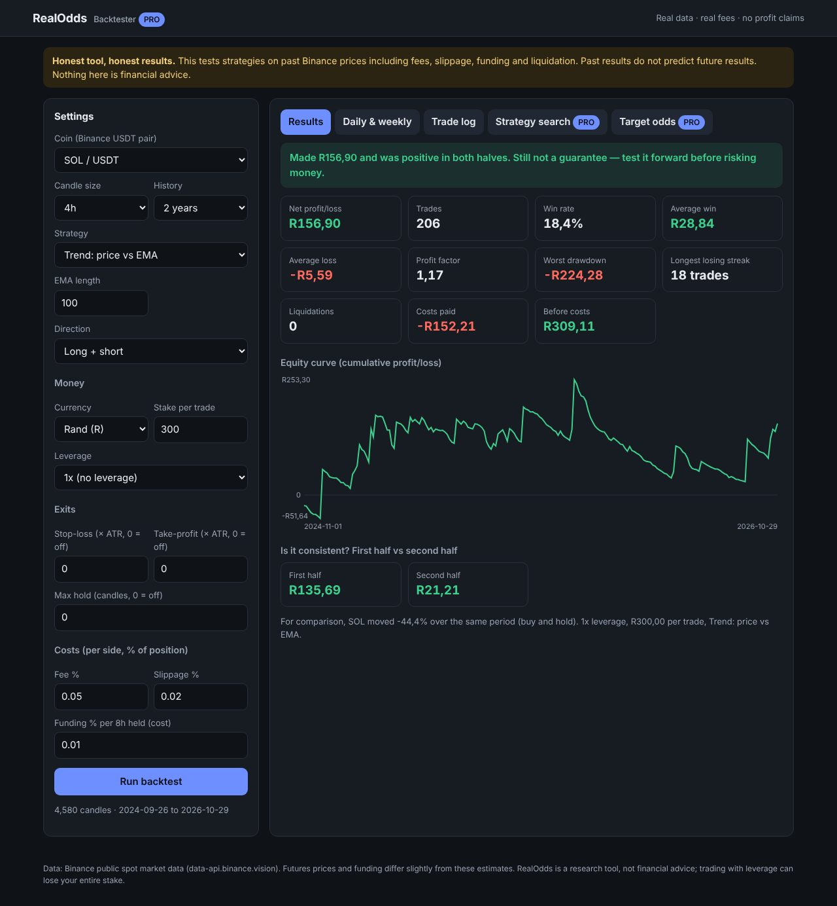

RealOdds backtests crypto trading strategies on real Binance price data, with fees, slippage, funding, leverage and liquidation all included. It doesn't sell signals and it doesn't promise profit. It shows you what actually would have happened.
Try it free Get ProRuns in your browser. No sign-up, no API keys, no exchange login.

Real results on SOL and DOGE, Oct 2024 – Oct 2026, R300 per trade, normal exchange fees. This is why we built RealOdds.
Trend, pullback, breakout, MACD + RSI, divergence, multi-timeframe: after costs, almost all of them lost on both coins.
Opening-range breakouts, VWAP, scalps, RSI(2): ten of them were profitable before fees. Fees turned every one into a loss.
The best strategy we found made R790 in 2 years. Without its 3 best trades it made R92. RealOdds shows you this on every test.
Every number a signal seller won't show you.
Fees, slippage and funding on every trade, plus liquidation when leverage gets you wiped out.
Average day and week, % of winning days, worst day, longest losing run, in rand or dollars.
First half vs second half, and the result without the 3 best trades, so you can tell an edge from one lucky month.
Tests every strategy and direction on your coin and flags which ones held up, instead of just showing the best one in hindsight.
"Can I make R150 on R500?" See how often the market reached your goal before your stop, at every leverage.
Prices come straight from Binance's public data into your browser. No account, no tracking, no keys.
Pay once. No subscription.
Plain answers from our own backtests.
It hit its target 95–98% of the time and still lost money.
16 of 16 tests lost. Ten were profitable before costs.
About a coin flip, slightly worse after fees.
29 of 32 reversed strategies still lost.
R530 of a R790 profit came from a single DOGE trade.
More are added as we test new strategies.
No tool can promise that, and we won't. RealOdds shows how a strategy actually performed on past data after costs. Most of the time the honest answer is that it lost, and knowing that before you trade is the point.
Binance's public spot market data (data-api.binance.vision), downloaded directly into your browser. Futures prices and funding rates differ slightly from these estimates.
No. That's why RealOdds splits every test into two halves and shows the result without the best trades. A strategy that only worked in one period, or because of one big trade, is probably luck.
You receive a download link for the Pro file. Open it in any modern browser (Chrome, Edge, Firefox or Safari) on desktop or phone.